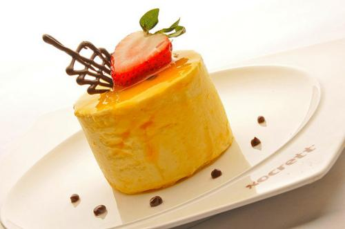

zhangjinruileiminxiaoye

甜品，也叫甜点，是一个很广的概念，大致分为甜味点心和广式的糖水。甜品，一般不会被当作正餐，通常作为下午茶的小食。 甜食，是治疗抑郁、放松心情的灵丹妙药，大多人在犒劳自己的时候喜欢来一点甜的，忘记减肥、忘记塑身、忘记那些好看但绷着身体的华丽衣服。一般来说，喜欢吃甜食的人，脾气都不坏，她们的坏情绪可以被巧克力、蛋糕、布丁、奶酪等一切甜美的食物代谢殆尽。即便如才女张爱玲也对冰淇凌、蛋糕等甜品“爱不释口”，尤其喜欢老上海凯司令的“栗子蛋糕”和“处女冰淇淋”。 广东糖水甜品的种类十分多样，豆类的有红豆沙、绿豆沙；糊类的有芝麻糊、杏仁糊、花生糊、核桃糊；药材类的有百合糖水、莲子糖水；牛奶类的有窝蛋奶、姜撞奶、双皮奶。另外，诸如银耳炖木瓜、芝麻汤圆、养颜西米露、黑糯米这样的甜食，也是糖水店里的常备之物。
2019-7-28
zhangjinruileiminxiaoye
2019-7-27
kajfbckahcljlihoihgiyhgvjGKCJBcnlakcljabkjgkJGLJHLJHBJFJGVjvjgchgdhtutetegfchgcjhfyiug
zhangjinruileiminxiaoye
2019-7-27
kajfbckahcljlihoihgiyhgvjGKCJBcnlakcljabkjgkJGLJHLJHBJFJGVjvjgchgdhtutetegfchgcjhfyiug